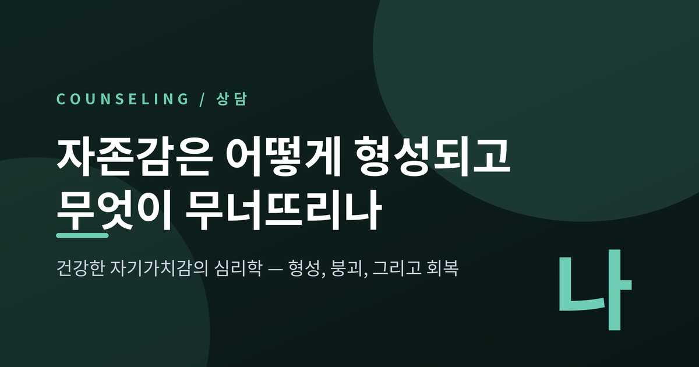
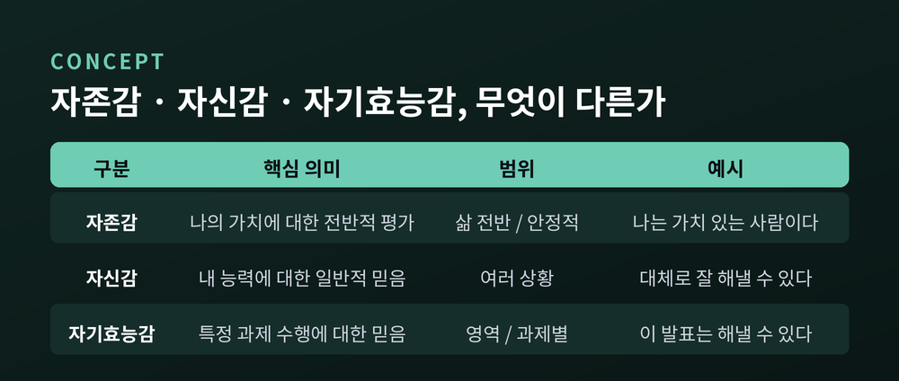
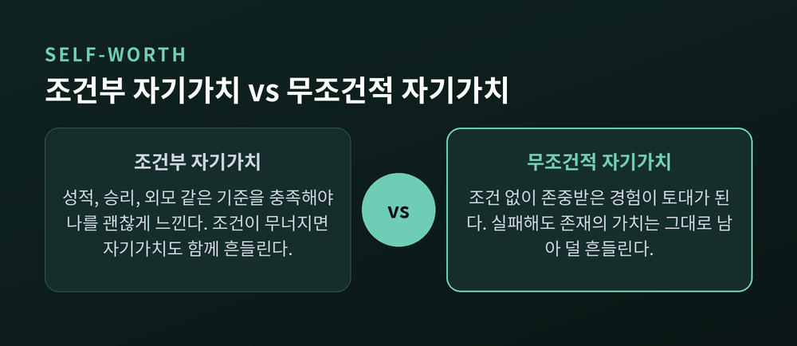
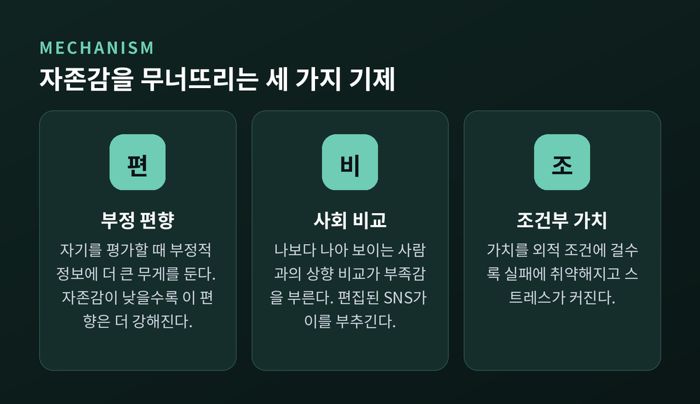
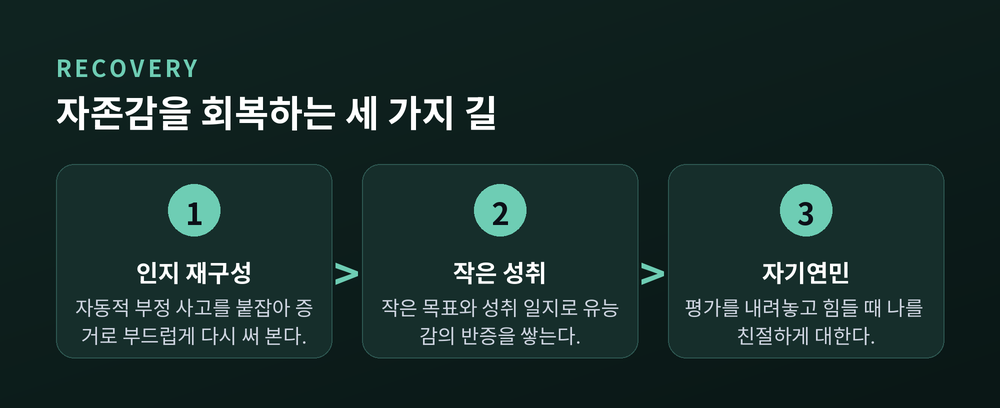
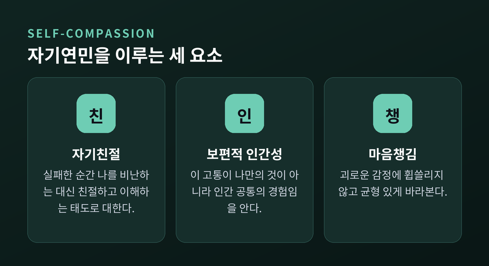

오늘은 자존감에 대해 이야기해 보려 합니다. 어떻게 만들어지고, 왜 흔들리며, 다시 어떻게 세울 수 있는지를 심리학 연구에 기대어 정리해 보겠습니다. 결론부터 말씀드리면, 자존감은 타고난 고정값이 아닙니다. 관계 속에서 형성되고, 몇 가지 기제로 무너지며, 방법을 알면 회복됩니다.
한 가지 부탁을 먼저 드립니다. 이 글은 자신을 채점하기 위한 글이 아닙니다. 자신을 조금 더 이해하기 위한 글입니다.
자존감(self-esteem)은 자기 자신의 가치와 존중에 대한 감각입니다. 심리학에서는 자기개념의 평가적·정서적 차원으로 봅니다. 쉽게 말하면 "나는 가치 있는 사람인가"에 대한 전반적인 느낌입니다.
이를 재는 대표 도구가 사회학자 모리스 로젠버그가 만든 로젠버그 자존감 척도(RSES)입니다. 사회과학에서 가장 널리 쓰이는 측정 도구입니다. 열 개 문항으로 되어 있고, 긍정 문항 다섯 개와 부정 문항 다섯 개가 섞여 있습니다. 총점은 0점에서 30점 사이이며, 점수가 높을수록 자존감이 높다고 봅니다.
여기서 기억할 점이 하나 있습니다. 로젠버그가 말한 자존감은 특정 능력이 아니라 '전반적인' 자기가치 평가라는 것입니다. 시험을 잘 봤는지, 오늘 실수를 했는지 하는 개별 사건이 아니라, 나라는 사람 전체에 대한 감각입니다.
세 단어는 자주 뒤섞여 쓰입니다. 그러나 가리키는 대상이 다릅니다.
자존감은 사람으로서 나의 가치에 대한 전반적 평가입니다. 상황을 넘어 비교적 안정적이고, 정서가 깊게 실립니다.
자신감은 여러 상황에 걸친 내 능력에 대한 일반적 믿음입니다. '가치'보다 '유능함'에 가깝습니다.
자기효능감은 심리학자 앨버트 반두라의 개념으로, 특정 과제나 상황에서 "이건 해낼 수 있다"고 믿는 감각입니다. 영역마다 다릅니다. 발표는 자신 있어도 수영은 그렇지 않을 수 있습니다.

세 가지를 구분하는 이유가 있습니다. "나는 이 일을 잘 못한다"는 자기효능감의 문제일 뿐인데, 그것을 "나는 가치 없는 사람이다"라는 자존감의 결론으로 성급히 옮기는 일이 흔하기 때문입니다. 능력의 부족과 존재의 가치는 같은 저울에 올릴 대상이 아닙니다.
연구들이 대체로 동의하는 지점이 있습니다. 자존감은 혼자 만들어지지 않고, 관계 속에서 비롯된다는 것입니다.
특히 유년기의 애착이 토대가 됩니다. 안정 애착은 긍정적인 자기가치감을 키웁니다. 부모의 따뜻하고 신뢰로운 돌봄은 아이가 스스로를 '사랑받을 만하고, 돌봄받을 자격이 있는 존재'로 표상하게 하는 밑바탕이 됩니다. 반응적이고 지지적인 양육은 안정 애착과 긍정적 자기상을 함께 길러 줍니다.
반대의 경우도 관찰됩니다. 충분한 돌봄을 받지 못하고 방임된 아이는 청소년기에 무가치감을 느끼고, 사람을 신뢰하기 어렵다고 여기기 쉽습니다. 아동기에 느낀 안전감은 회복탄력성과 자존감을 거쳐 성인기의 자기개념에까지 이어진다는 연구도 있습니다.
다만 여기서 오해하지 않으셨으면 합니다. 이것은 부모를 탓하기 위한 이야기가 아닙니다. 자존감의 뿌리가 관계에 있다는 사실은, 지금 새로운 관계와 경험으로 다시 자랄 수 있다는 뜻이기도 합니다.
자존감이 흔들리는 첫 번째 이유는 '조건'입니다.
조건부 자존감이란, 내 가치가 어떤 기준의 충족 여부에 매여 있는 상태입니다. 성적이 좋아야, 이겨야, 외모가 받쳐 줘야 비로소 나를 괜찮게 느끼는 것입니다.
상담심리의 대가 칼 로저스는 이 반대편에 '무조건적 긍정적 존중'을 두었습니다. 조건 없이 존중받는 경험이 흔들리지 않는 자기가치를 만든다고 보았습니다. 수용을 성공의 대가로 여길수록, 자기감은 그 조건에 종속됩니다.

문제는 그 조건이 대개 비현실적이라는 데 있습니다. '지금의 나'와 '인정받으려면 되어야 할 나' 사이의 간극이 벌어질수록 불안과 우울이 자랍니다. 심리학자 제니퍼 크로커의 연구는 자존감을 좇는 일에 대가가 따른다고 말합니다. 자존감을 투자한 영역에서 우리는 실패에 더 취약해지고, 성공이 불확실하면 미리 발을 빼기도 합니다. 특히 외모 같은 외적 조건에 자존감을 걸면 스트레스와 여러 문제로 이어지기 쉽습니다.
흥미로운 지점도 있습니다. 완전히 무조건적인 자기가치만이 정답은 아닐 수 있다는 연구입니다. 성장에 기여하는 내재적 기준에 자존감이 연동될 때는 오히려 진정성·안녕과 긍정적으로 이어졌습니다. 결이 다른 것은 외적·비교적 조건이었습니다.
조건 말고도, 마음이 스스로를 깎는 두 가지 습관이 있습니다.
하나는 부정 편향입니다. 사람은 자기 능력에 대한 믿음을 만들 때 부정적 정보에 더 큰 무게를 둡니다. 흥미롭게도 이 편향은 남이 아니라 '자기 자신'을 평가할 때 특히 강하게 나타납니다. 그리고 자존감이 낮을수록 이 편향이 더 세집니다. 열 번의 칭찬보다 한 번의 지적이 오래 남는 이유입니다.
다른 하나는 사회 비교입니다. 남과 자신을 견주는 것은 인간의 오랜 성향이지만, 습관적이고 자동적이며 부정적으로 치우친 비교는 인지 왜곡이 됩니다. 특히 나보다 나아 보이는 사람과의 상향 비교는 부족감을 부릅니다. 디지털 화면 속 편집된 삶들이 이 비교를 온종일 부추깁니다.

이 세 가지는 서로 맞물립니다. 조건에 나를 걸고, 부정적인 면만 크게 보고, 남과 끊임없이 비교합니다. 그렇게 자기상은 실제보다 어두워집니다. 여기서 중요한 사실이 있습니다. 이것은 성격 결함이 아니라 마음의 작동 방식이라는 점입니다. 방식을 알면 다르게 다룰 수 있습니다.
예전에는 "자존감을 높이려면 나를 더 좋게 평가하라"고 했습니다. 지금의 연구는 다른 방향을 권합니다. 평가를 낮추라는 것이 아니라, 평가 자체에 덜 매이라는 것입니다.

첫째, 인지 재구성입니다. 인지행동치료(CBT)는 자존감 향상에 가장 널리 검증된 방법 중 하나입니다. "나는 늘 망친다", "아무도 날 좋아하지 않는다" 같은 자동적 부정 사고를 붙잡아, 증거를 대어 다시 써 보는 것입니다. "이번엔 안 됐지만 배울 수 있다"처럼요. 자신을 몰아붙이라는 뜻이 아닙니다. 사실인지 부드럽게 되묻는 일입니다.
둘째, 작은 성취입니다. 작고 달성 가능한 목표를 쌓으면 유능감이 자랍니다. 매일의 사소한 성취와 누군가 건넨 좋은 말을 적어 두는 '성취 일지'는 부정적 믿음에 대한 반증이 됩니다. 큰 도약이 아니라 작은 걸음이 자기개념을 단단하게 합니다.
셋째, 자기연민입니다. 심리학자 크리스틴 네프는 자존감의 건강한 대안으로 자기연민을 제시했습니다. 세 가지로 이루어집니다. 실패한 순간에 나를 비난하는 대신 친절하게 대하는 자기친절, 이 고통이 나만의 것이 아니라 인간 공통의 경험임을 아는 보편적 인간성, 괴로운 감정에 휩쓸리지 않고 균형 있게 바라보는 마음챙김입니다.

자기연민이 자존감보다 나은 점이 있습니다. 자존감은 '남보다 나은가'를 자꾸 따지게 하지만, 자기연민은 그 채점을 내려놓습니다. 그래서 조건에 덜 흔들리고, 더 안정적인 회복력을 줍니다. 남을 이겨야 얻는 가치가 아니라, 힘들 때 나를 어떻게 대하는가의 문제이기 때문입니다.
정리하면 이렇습니다. 자존감은 관계 속에서 자라고, 조건과 비교와 부정 편향으로 무너지며, 인지 재구성과 작은 성취와 자기연민으로 다시 세워집니다. 무너지는 방식도, 회복하는 방식도 배울 수 있는 기술입니다.
"나는 조건을 충족해서가 아니라, 그냥 존재로서 돌봄받을 자격이 있다."
이 한 문장을 오늘 자신에게 조용히 건네 보시면 좋겠습니다.
덧붙일 말이 있습니다. 위의 방법들은 일상적인 자기돌봄에 관한 일반적인 안내입니다. 오래가는 우울이나 불안, 일상이 눈에 띄게 어려워지는 상태가 이어진다면, 혼자 버티기보다 전문 상담사나 정신건강 전문가의 도움을 받으시길 권합니다. 도움을 청하는 일은 자존감이 낮아서가 아니라, 자신을 존중하기에 하는 선택입니다.